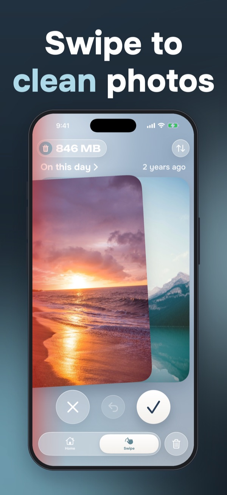
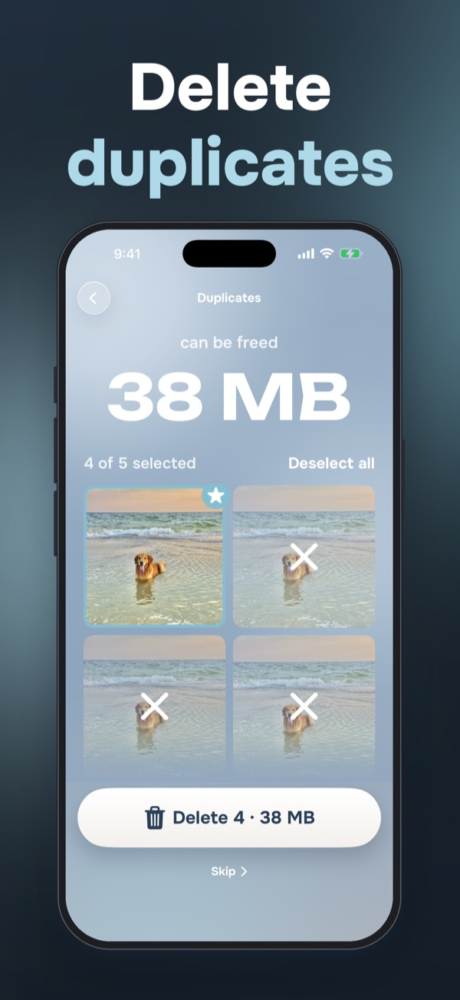
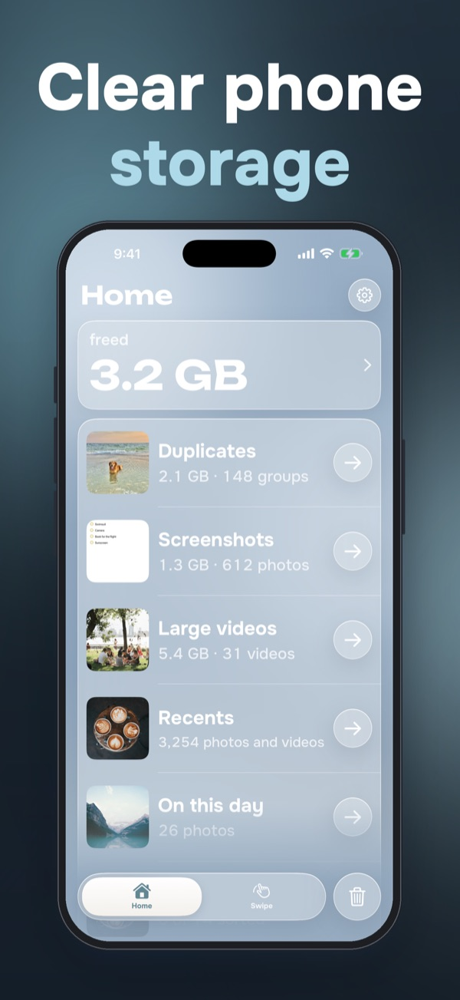
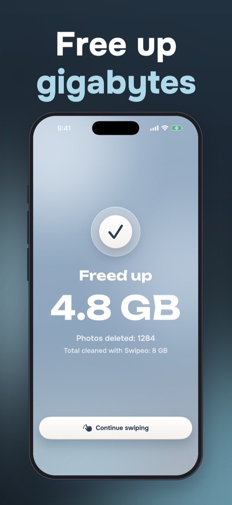

What is Swipeo?
A photo and video cleaner for iPhone and iPad: you decide with a swipe, and deleted items wait in a trash first.
Features
| Feature | What you get |
|---|---|
| Swipe review | Photos and videos one card at a time; swipe or tap; undo |
| In-app trash | Restore, delete one or delete all; emptying it moves items to Recently Deleted in Photos |
| Review sets | Screenshots, recent, selfies, bursts, Live Photos, large videos, random, on this day |
| Months and albums | Clean one month or one album at a time |
| Duplicates | Groups with a Best badge; sort by newest, oldest or largest; not AI |
| Statistics | Storage overview, media types, monthly cleanup progress |
| Devices | iPhone and iPad, iOS / iPadOS 18.4 or later |
| Languages | English, Russian, Spanish, French, German, Italian, Chinese, Japanese, Korean |
Privacy
Swipeo works with the system Photos library on your device and does not upload your photos to its own servers. The app uses analytics and subscription services. If an original is stored only in iCloud, iOS may download it so it can be shown. See the App Privacy section of the App Store listing and the privacy policy.
Price
Free to download. The free version has a daily limit on deletions, including one duplicate group a day. Premium, weekly or yearly, removes the limit. Current prices are on the App Store listing.
What it does not do
No AI detection of blurry or similar photos, no cloud storage and no sync of its own. With iCloud Photos on, deleting a photo also deletes it from iCloud.
Screenshots




Doing this with Swipeo
Open the app, swipe or tap to keep or delete, and check Swipeo's trash before anything reaches the iPhone's Recently Deleted.
FAQ
Does Swipeo work on iPad?
Yes. It runs on iPhone and iPad with iOS or iPadOS 18.4 or later.
Does Swipeo upload my photos?
It does not upload your photos to its own servers. Cleanup runs on the device. The app uses analytics and subscription services.
Can I undo a swipe?
Yes. Use undo during a session, or restore the item from Swipeo's trash before you empty it.
Is Swipeo free?
It is free to download with a daily limit on deletions. Premium removes the limit.
Does Swipeo use AI to find duplicates?
No. It groups duplicates by type, resolution and capture time.
Related
- Photo cleaner apps that don't upload your photos
- Tinder-style photo cleaner apps for iPhone
- Swipewipe alternatives for iPhone
- Slidebox alternatives for iPhone
Sources
Steps and menu names can differ slightly between iOS versions. Last checked 27 Nov 2026.